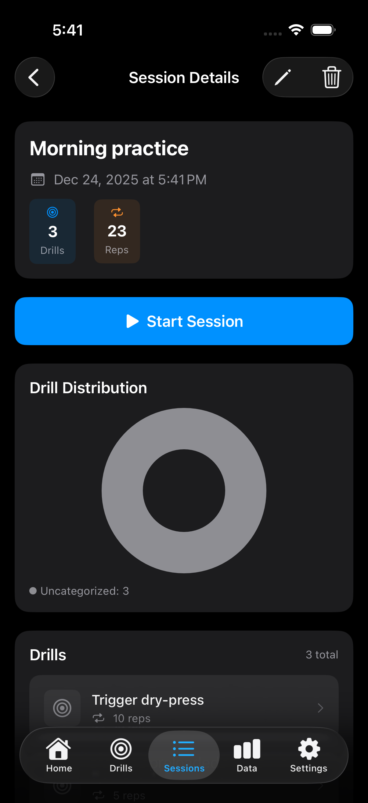

iPhone — Fast, portable training
Use your iPhone for everyday training: launch drills, get spoken splits, and save sessions for quick review.

What you get
- One‑tap start: Start and mark shots with a single tap.
- Live spoken splits (AirPods ready): Hear immediate feedback through AirPods or speakers.
- Instant on‑screen splits: See best/worst and cumulative times immediately.
- Session auto‑save: Every run is saved for quick review.
- Create and reuse drills: Keep practice focused with templates.
- Optional hardware support: Add third‑party timers for extra precision.